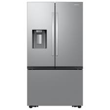
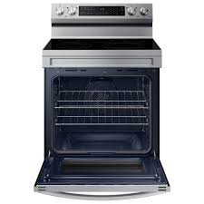
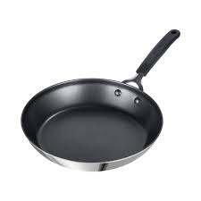
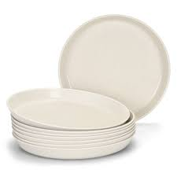

The fridge is where everything begins in the kitchen. It's where the majority of ingredients are kept so they stay fresh. The fridge holds meats, fruits, vegetables, condiments, and anything else you would want to keep cold. The fridge is an essential for every kitchen team.

The oven is where ingredients are put to cook. They can be cooked on top or in the oven itself. It can be used to cook meats, vegetables, sauces, any sort of dish you would like to make. Without the oven, the kitchen can't even operate.

The frying pan works hand in hand with the oven in order to create dishes. The frying pan is used on the top portion of the oven for frying, searing, sautéing, etc. Many dishes require a frying pan or some other kind of pan in order to create the best dish possible.

The plates fulfill all of the work that the other team members put into making an amazing dish. Once the food is finished being cooked a chef will transfer the food onto a plate and have it served.